01.1
Neural network for depth estimation & segmentation
Core perception model for a 3D reconstruction pipeline — joint depth estimation and image segmentation used to convert 2D capture into structured 3D geometry.
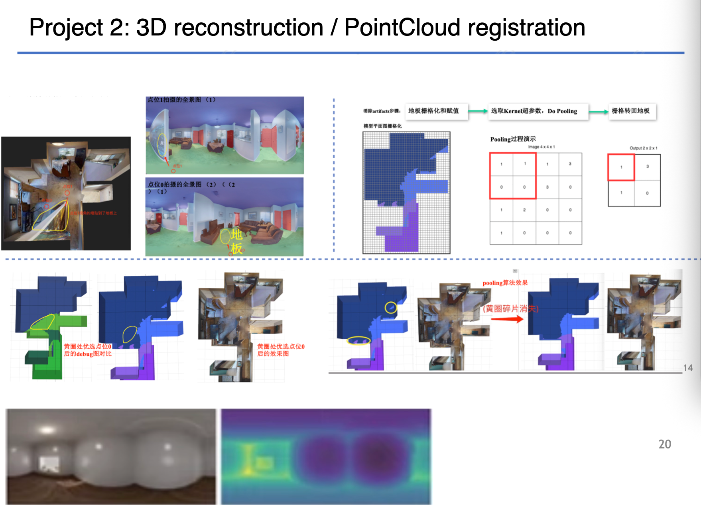
Portfolio — 2026
Depth, segmentation, and 6DoF playback pipelines for turning captured scenes into navigable 3D.
Core perception model for a 3D reconstruction pipeline — joint depth estimation and image segmentation used to convert 2D capture into structured 3D geometry.

End-to-end pipeline reconstructing 3D scenes from captured footage, feeding the depth/segmentation model above into a renderable scene representation.
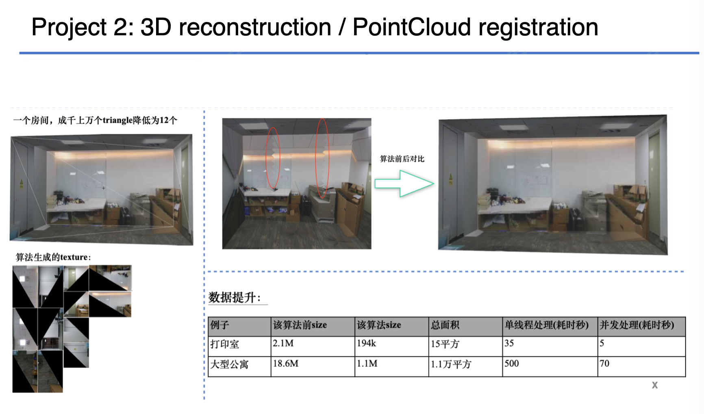
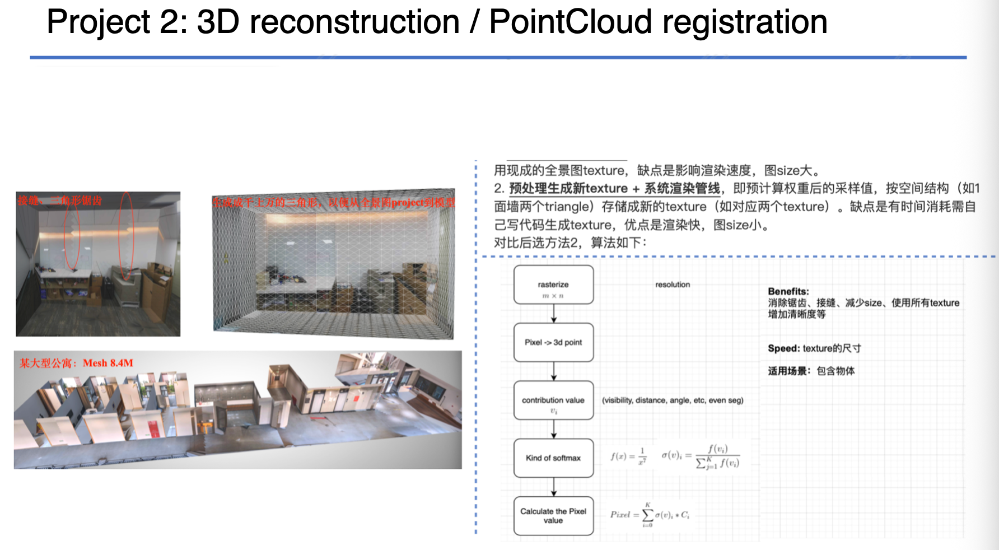
Six-degrees-of-freedom video player running in-browser, allowing free viewpoint movement through reconstructed 3D video content.
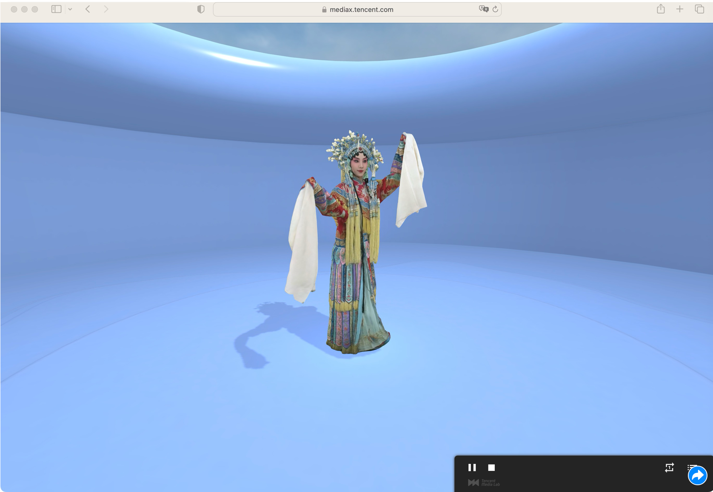
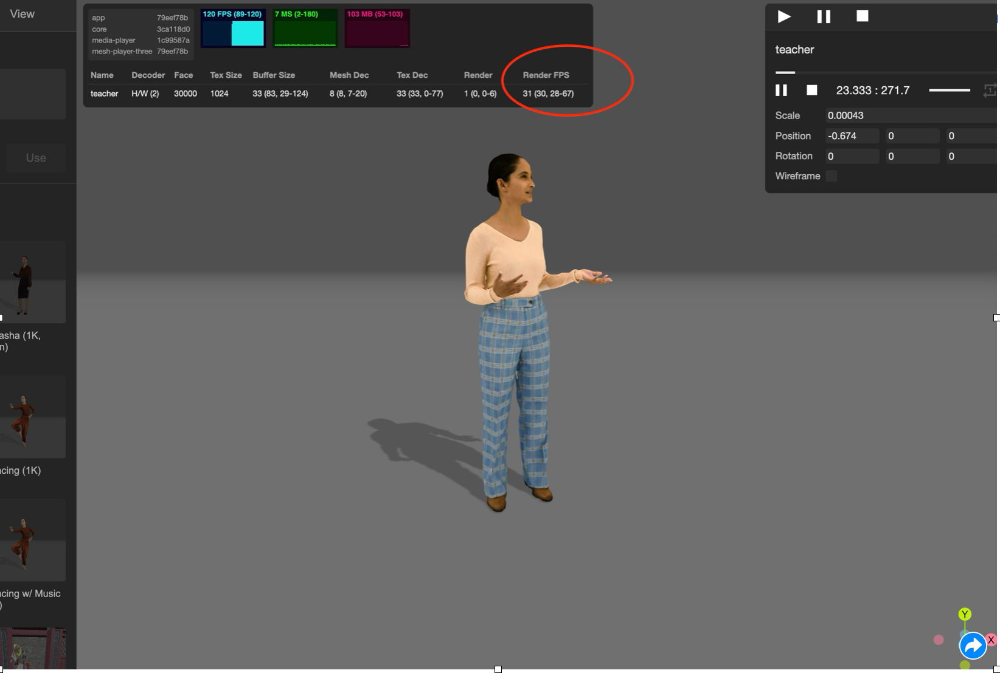
Playback engine for 360° video across mobile and VR headsets, later extended into a licensable SDK (see 02.5, 02.9).
Product Show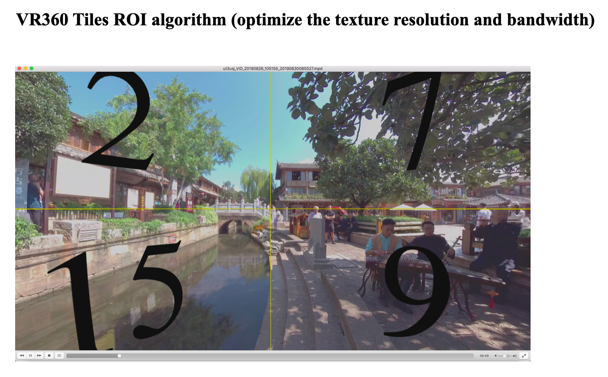
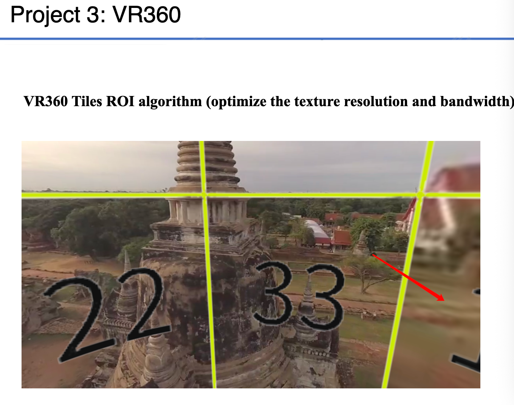
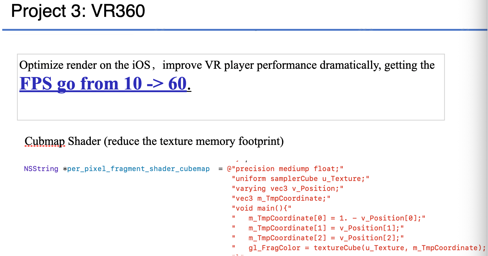
Fourteen shipped titles across iOS, Android, and PC — including two published MMORPGs and a self-built game engine.
Published massively multiplayer online RPG built in Unity.
Game Show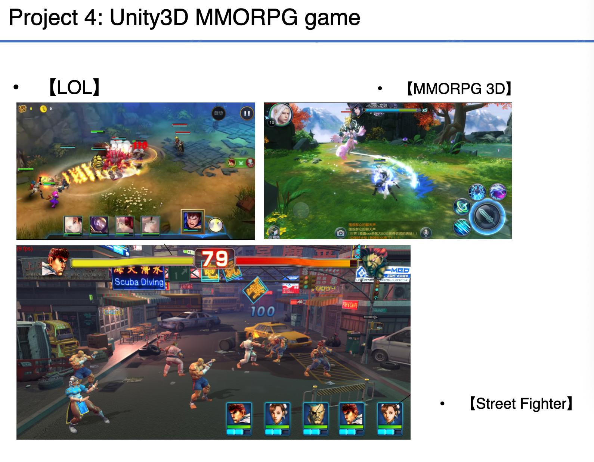
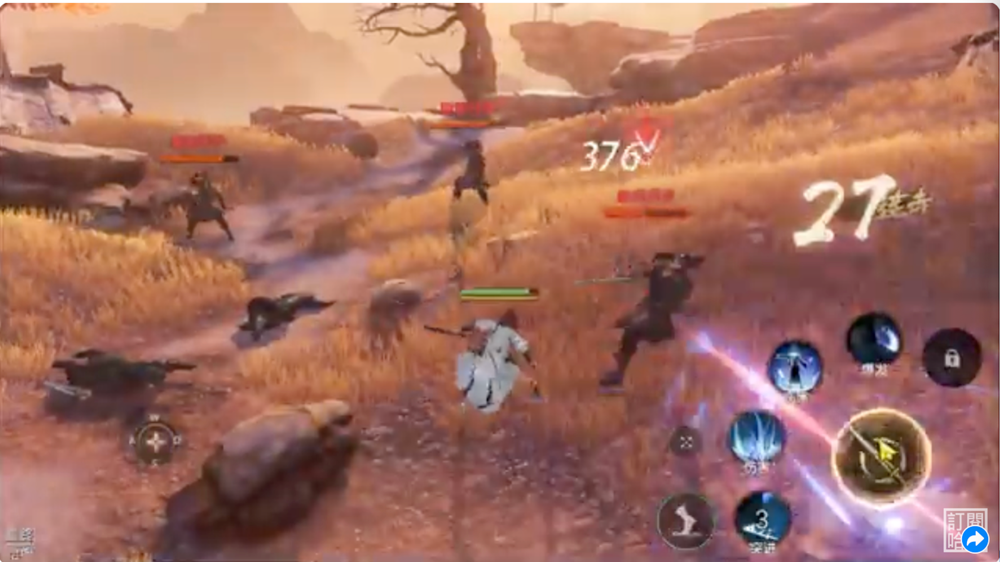
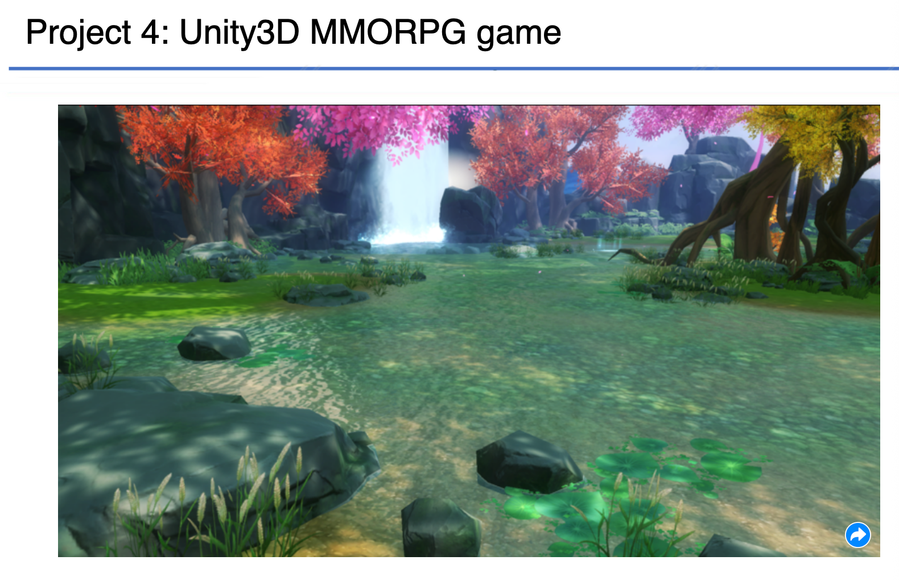
Published MMORPG built on a game engine written from scratch in C++, covering rendering, networking, and gameplay systems.
Game ShowQQBrowser for iPhone/iPad, mobile games, the VR360 player, a camera app built on ARKit, and the VR360 SDK, among others.
Mobile QQ, QQBrowser, mobile games, and the VR360 SDK, among others.
Software for data analysist
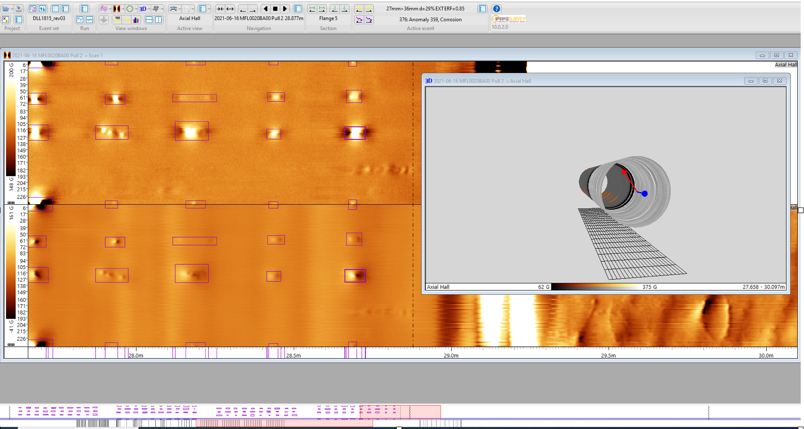
Language models, reasoning, reinforcement learning, and vision-language pretraining — from open-source contributions to models trained from scratch.
Trained a transformer model on in-house pipeline inspection reports to detect anomalies in industrial pipeline data.
Project owner. Vision-language-action model for robotic control, developed and maintained as an open-source repository.
Project owner. Pretrained language model released publicly for community use and fine-tuning.
Contributed pretraining performance improvements, reducing pretraining time and improving throughput by 14.7%.
+14.7%pretraining speed
Designed, trained, and deployed a 0.8B parameter language model, hosted live on Hugging Face.
Trained a model with Group Relative Policy Optimization on the MATH dataset, raising MATH-500 accuracy from 15.2% to 47.4%.
15.2% → 47.4%MATH-500 accuracy
Solo-developed and trained a novel transformer-based autoencoder-decoder language model architecture.
RL project for robotic manipulation tasks performed on a drone platform.
Pretrained a vision-language model combining a Qwen language backbone with a SigLIP vision encoder.
Production infrastructure outside the research and graphics work above.
Full-stack SaaS product designed, built, and deployed on Tencent Cloud infrastructure.
System design behind the projects above — how the pieces are split, where state lives, and what each layer is responsible for.
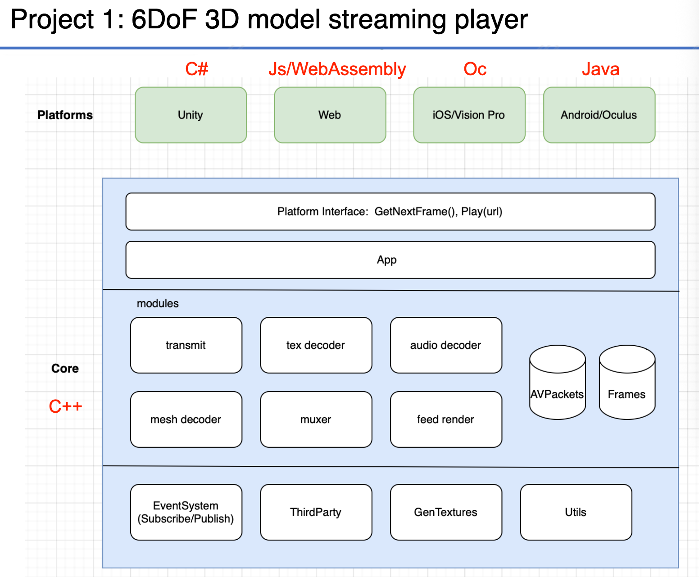